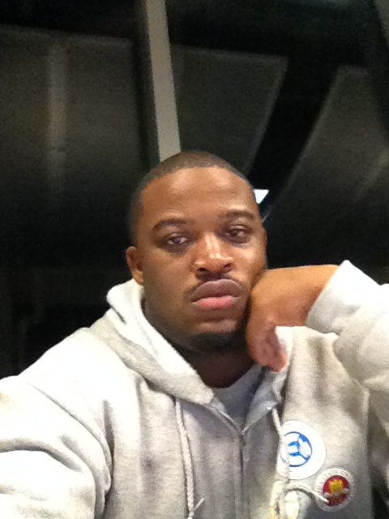

<!DOCTYPE html>
<html lang="en">
<head>
	<title>
		Ruben Marlowe III
	</title>
	<meta charset="utf-8"/>
</head>
<body>
</body>
</html>
<div>
	
</div>
<br/>
<div>
	<p>
		Ruben Marlowe III<br/>
		Educational Institution : Florida Agriculture and Mechanical University <br/>
		Major : Computer Engineering<br/>
		Project Responsibility : Primiary - Software Engineer<br/>
				&nbsp;&nbsp;&nbsp;&nbsp;&nbsp;&nbsp;&nbsp;&nbsp;&nbsp;&nbsp;&nbsp;&nbsp;
				&nbsp;&nbsp;&nbsp;&nbsp;&nbsp;&nbsp;&nbsp;&nbsp;&nbsp;&nbsp;&nbsp;&nbsp;
				&nbsp;&nbsp;&nbsp;&nbsp;&nbsp;&nbsp;&nbsp;&nbsp;&nbsp;
					 Secondary - Test Engineer
	</p>
</div>
<br/>
<div>
	<center>
		Background Information
		<p style="text-align: justify; width: 600px; margin: auto;">
			I'm a native son of Tallahassee, I'm currently a senior at FAMU studying
			computer engineering. I'm interested in puring a higher education in
			electrical engineering for my master's and eventually my doctorate in
			biological or chemical engineering. My path stem from a deep rooted
			interest to purse a profession in change research and and change the
			world as we see it. In additon, I'm motivated to established a program
			(EFS-Engineering for Success) that exploits and inform the benefits of
			engineering in the community, school, and professions.
		</p>
</center>
</div>
</html>